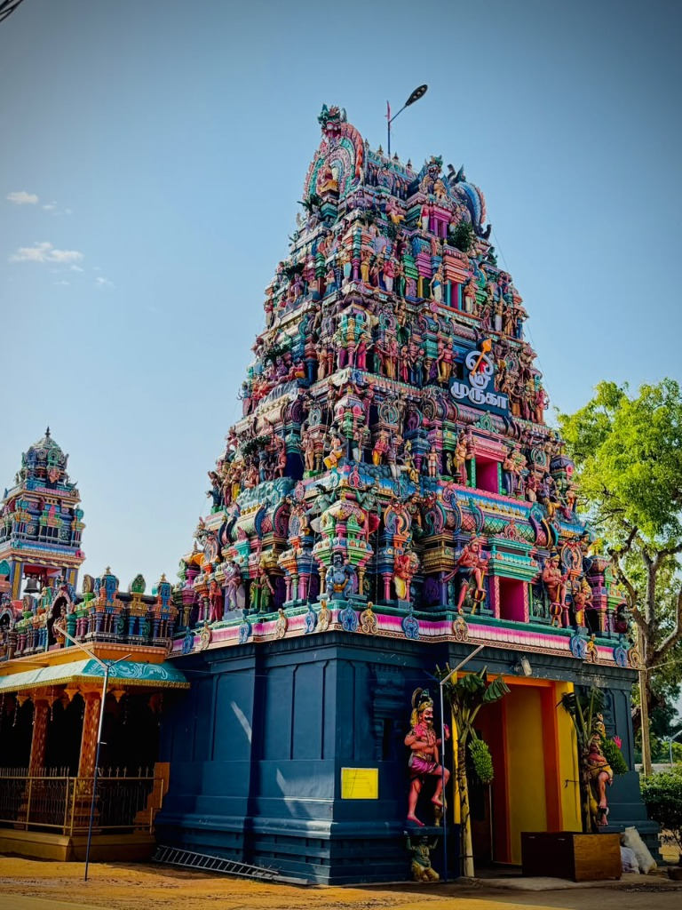

ஆதி தொன்மை வாய்ந்த புண்ணிய கந்தவேள் திருத்தலம். தினசரி ஆறு கால பூஜைகள், விசேஷ அபிஷேகங்கள் மற்றும் ஆண்டுப் பெருவிழாக்களின் புகைப்படங்களை உடனுக்குடன் கண்டு கந்தப்பெருமானின் பேரருளைப் பெறுங்கள்.

கந்தசுவாமி கோவிலில் நடைபெற்ற சமீபத்திய சிறப்பு அபிஷேகங்கள், அலங்காரங்கள் மற்றும் உற்சவங்கள்

கந்தசஷ்டி நன்னாளில் தேவஸ்தானத்தில் பக்தர்கள் சூழ நடைபெற்ற சூரசம்ஹார வைபவம் மற்றும் மாலையில் நடைபெற்ற திருக்கல்யாண உற்சவம்.

முருகப்பெருமானின் அவதாரத் திருநாளான வைகாசி விசாகத்தை முன்னிட்டு மூலவருக்கும் உற்சவருக்கும் நடைபெற்ற 108 சங்காபிஷேகமும், தங்கக் கவச அலங்காரமும்.
தைப்பூச நன்னாளில் கந்தப்பெருமான் வள்ளி தெய்வானை சமேதராக மயில் வாகனத்தில் எழுந்தருளி திருவீதி உலா வந்த கண்கொள்ளாக் காட்சி.
திருக்கோவில் விசேஷங்கள் மற்றும் திருவிழாக்களின் அழகிய புகைப்படத் தொகுப்புகள்.
இயற்கை வளம் நிரம்பிய ஈழமணித்திரு நாட்டில் யாழ்ப்பாண மாவட்டத்தின் தென்மராட்சி மேற்கில் கடலேரியால் சூழப்பட்ட கைதடி மண்ணில் எழுந்தருளி அருள்பாலிக்கும் புண்ணிய திருத்தலம். டச்சு ஆட்சிக் காலமான 1775-ல் சந்திரசேகர வேலப்பமுதலியார் அவர்களால் தோரணக் கடவையில் வேல் முதன்முதலாக ஸ்தாபிக்கப்பட்டு, பின்னர் பொன்னம்பல முதலியார் நிலமளிக்க 1835-ல் கயிற்றசிட்டியில் ஆலயம் நிர்மாணிக்கப்பட்டு, 2024-ல் புதிய மகா கும்பாபிஷேகமும் 15 திருவிழா மஹோற்சவமும் கண்ட வரலாற்றுப் புகழ்பெற்ற ஆலயமாகும்.